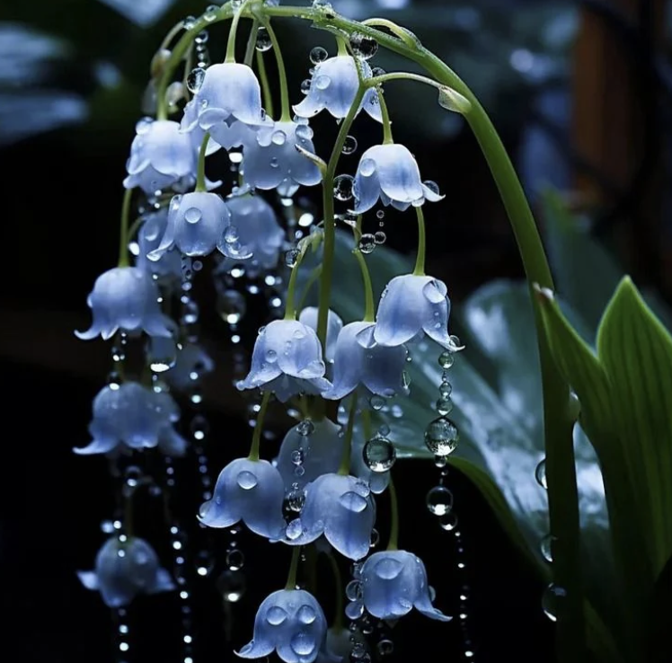
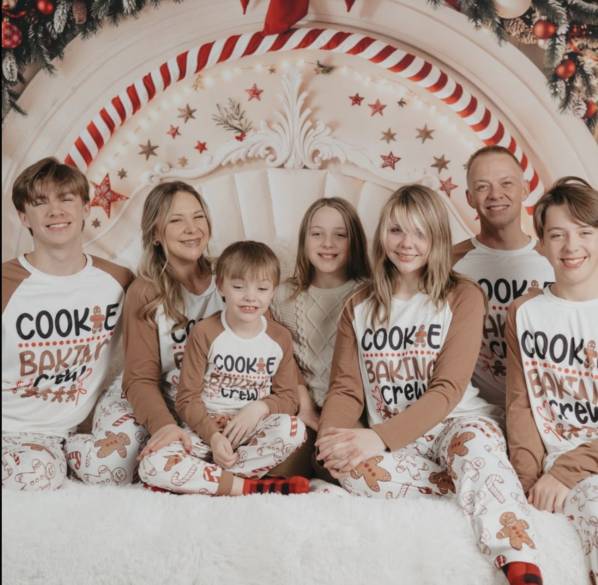
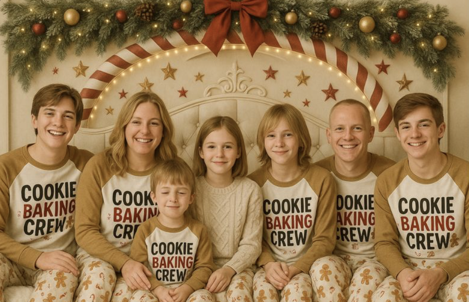
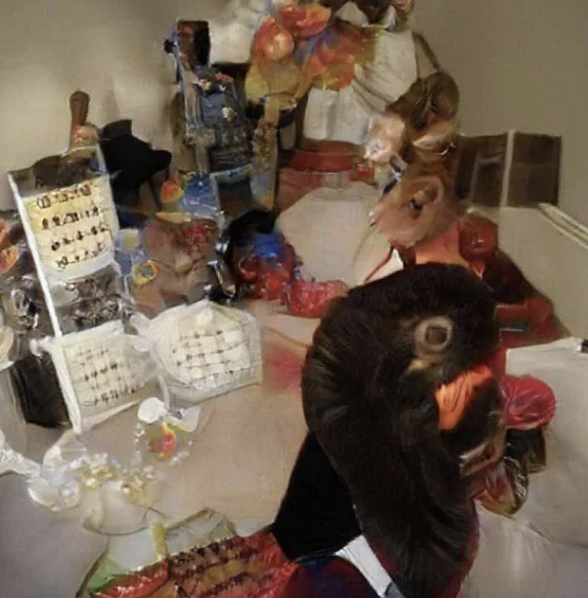
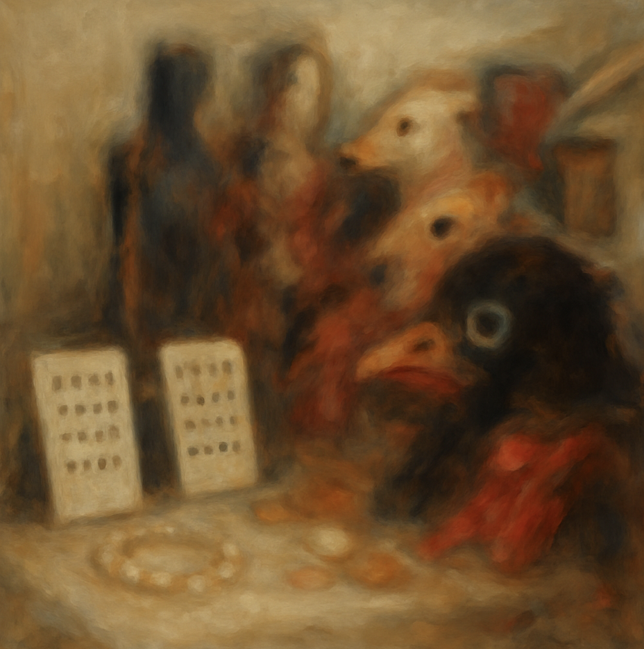

Introduction:
Hey readers! Today we will be exploring how LLMs interpret images. I will be working with Chat-GPT-5.1 thinking. For this experiment, I will be feeding Chat an image and asking it to describe the image in as much detail as it can. I will then be using that description and feeding it to a fresh chat with chat-gpt and asking it to create an image that looks like the description. We’ll be looking at a few different types of images and they will get increasingly more complex. I won’t be sharing the parts where I ask it to create the image because I’m just going to write “create the following image: Insert chats description” and thats going to be pretty boring to read 4 times.
Test 1
USER:
Describe this image in as much detail as you can.ASSISTANT:
In the image, there are two fluffy golden retriever puppies sitting side-by-side on a grassy field.
The puppy on the left has slightly darker golden fur, especially around its ears and back. Its mouth is open wide with a long pink tongue hanging out, giving it a very happy, relaxed expression. Its ears droop down on either side of its head, and its eyes look soft and gentle, facing slightly toward the camera.
The puppy on the right is a bit lighter in color, more creamy-gold than the left one. Its mouth is also open as if mid-pant or mid-bark, with a pink tongue visible and tiny teeth showing. Its head is turned slightly toward the left puppy, and its chest fur looks extra fluffy.
The two puppies are sitting very close together, their shoulders touching so they look like best friends or siblings. The background is a soft blur of green, suggesting a large grassy park, and there are scattered orange and yellow flower petals around their paws that add warm pops of color. The overall feeling is bright, playful, and very cute.
Overall, I’m pretty surprised with this result. It’s definitely more natural and representative of the original image than I thought it would be. Even with a fairly short description, chat was able to capture its likeliness
Test 2

USER:
Describe this image in as much detail as you possibly can.ASSISTANT:
The image shows a close-up of a delicate flowering plant, strongly resembling lily of the valley, but with an almost otherworldly, bluish coloration.
Flowers and structure
– Several arching, slender green stems curve from the upper right toward the center and lower left of the image.
– Hanging from these stems are many small, bell-shaped flowers.
– Each flower is about the size of a fingertip, with smooth, curved petals that flare slightly at the bottom in 5–6 rounded lobes.
– The flowers are a cool, pale blue that shifts toward silvery white where the light hits them, giving them a soft, luminous look.
– The bells hang in clusters along the stems, each on its own thin, pale green stalk. Some stalks are straight, others slightly bent, which makes the bells look like they’re gently drooping or swaying.
Water droplets and beads
– The most striking feature is the presence of water.
– Individual droplets cling to the surfaces of the bell petals, especially near the edges and lower curves; some look like tiny glass marbles stuck to the flowers.
– Between and beneath the flowers, there are long vertical strings of spherical droplets or beads. They look almost like strands of crystal or raindrops frozen in midair.
– These beads catch highlights: each sphere has a bright highlight where the light reflects, and darker shading on the opposite side, so they look very three-dimensional.
– In some places, smaller droplets seem to be mid-fall, suspended in front of or behind the flowers, adding to the sense of motion and depth.
Lighting and color
– The lighting is low and cool, suggesting either shade, early morning, or evening.
– The flowers themselves appear softly illuminated, as if lit by a diffused, bluish light source. This makes the blue bells glow gently against a darker background.
– The background is blurred (shallow depth of field), with deep greens and near-blacks that emphasize the flowers in the foreground.
– Subtle reflections from the water droplets create tiny points of light, almost like stars or fairy lights scattered among the bells.
Leaves and background elements
– To the right, behind the hanging stems, there are larger, smooth green leaves. One major leaf curves upward, catching a bit of light along its edge.
– The leaves are slightly out of focus but still recognizable by their broad shape and glossy surface.
– In the dark background, there are hints of more foliage—soft shapes and streaks of green and blue, completely blurred, which keeps attention on the main cluster of flowers.
Overall impression and composition
– The composition is vertical: the main stem arcs from the top right toward the center, and the strings of droplets and flowers cascade downward.
– The focus is sharp on the central bells and water beads, gradually softening outward, which draws the eye into the middle of the image.
– The combination of the cool blue tones, crystal-clear droplets, and dark, soft background gives the image a serene, almost magical atmosphere—like a nighttime or rainy-forest close-up where the flowers and beads look almost jewel-like or ethereal.
This next image I felt was a little bit more complex, and chat output a far more detailed description. It didn’t pick up on the colors like I thought it would.. I can’t really describe it, but this just feels like its lacking something
Test 3

USER:
Please describe this image in as much detail as you possibly can.ASSISTANT:
In the image, seven people are sitting closely together on a fluffy white surface, posed for what looks like a cozy holiday photo. The group fills almost the entire width of the frame, aligned in a straight line and leaning slightly toward one another so there are no gaps between them. The overall color palette is warm and soft: lots of whites, creams, tans, and browns, with pops of red from the decorations and little details in their clothing.
Background and setting
– Behind them is an elaborate, festive backdrop that feels very Christmas-themed.
– At the very top, a thick garland of evergreen branches stretches across the upper edge of the image, dusted with what looks like artificial snow.
– Tucked into the greenery are round ornaments in metallic gold and matte red, pinecones, and other baubles, with a large red bow hanging from the center of the garland.
– Below the garland is an arched structure that looks like a whimsical, oversized cookie or candy arch, rimmed by a thick candy-cane stripe of red and white diagonal bands curving over the group.
– A soft row of small lights traces the inside of the arch, giving the scene a gentle glow.
– Within the arch, the backdrop is a pale, creamy beige color with decorative elements: small star ornaments in shades of gold, bronze, and red, plus a few red star outlines.
– Near the center top is a white ornamental flourish—like carved scrollwork—adding to the cozy, staged feel.
– Just behind their shoulders is what looks like a padded, upholstered headboard or large cushion in a soft cream color, with vertical panels that resemble a curved headboard.
– They are sitting on a very fluffy white blanket or faux-fur throw that covers the entire bottom of the image, making the scene look extra soft and warm.
Matching outfits
– Everyone except the middle child is wearing matching holiday pajamas.
– The pajama tops are raglan-style long-sleeve shirts with light tan sleeves and collar and a white body.
– On the front of each shirt is the same playful design with the words “COOKIE BAKING CREW” in large, bold black and red lettering, with rows of red dots, candy-cane accents, and a small gingerbread figure incorporated into the design.
– Their pajama pants match as well: white or off-white fabric covered in a repeating pattern of gingerbread people, candy canes, and other cookie shapes in browns and reds.
– The smallest child in front is wearing bright red and black striped socks, visible where his legs are folded on the fluffy blanket.
– The middle child, who breaks the pattern slightly, is wearing a cozy, textured light-beige sweater with a diamond or cable-knit pattern, which still fits the neutral color palette.
People from left to right
– Far left: An older boy or teen with light brown hair that’s relatively long on top and swoops across his forehead, slightly tousled. He’s smiling broadly with his teeth showing and eyes gently squinted. He wears the full “COOKIE BAKING CREW” pajama set and appears to be sitting with his legs bent or crossed on the blanket.
– Second from left: An adult woman with medium-length, wavy blonde hair parted slightly off-center. She has a big, warm smile that shows braces, and her eyes are almost closed from the size of her smile. She’s also in the matching pajamas, with one hand resting near the small boy in front of her in an affectionate, protective way.
– Third from left (front small child): A young boy sitting slightly forward in front of the woman. He has straight, light brown hair cut in a simple style that falls over his forehead. His eyes are partly closed, and he has a soft, relaxed smile, as if caught mid-blink. He wears the matching pajama set and red-and-black striped socks, sitting cross-legged or with folded legs, hands resting loosely in his lap.
– Center child: Directly in the middle is a child slightly older than the small boy. They have straight, light brown hair parted in the center and falling just past their shoulders, framing their face symmetrically. They wear the light beige textured sweater with a diamond knit pattern. Their smile is gentle and closed-lip, and they sit upright, looking calmly at the camera.
– Third from right: A teen girl or young person with light blonde hair that reaches around the shoulders, cut in slightly layered fashion with long bangs that sweep across the forehead and partially cover one eye. She wears the matching pajama set, leans slightly forward with hands clasped together in her lap, and has a small, friendly smile that feels a bit shy.
– Second from right (adult man): An adult man with very short, light hair—blonde or light brown—neatly trimmed close to his head. He has a broad, open smile showing his teeth and bright eyes. He is also in the matching pajama outfit and sits slightly back behind the others, leaning forward so his face fits within the frame.
– Far right: Another older boy or teen with light brown hair, a bit longer on top and swept to one side, with shorter sides. He’s smiling widely with teeth visible and slightly squinted eyes. He wears the same pajama set, his torso angled slightly toward the rest of the group, helping to complete the gentle inward curve of the group’s arrangement.
Overall feel and composition
– The seven people are seated very close together, shoulders touching or nearly touching, with the smallest child positioned slightly forward, creating a layered look.
– The fluffy white blanket, the coordinated “COOKIE BAKING CREW” pajamas, and the candy-cane arch backdrop all contribute to a playful, staged holiday-card aesthetic, as if taken in a studio designed for Christmas or winter portraits.
– The lighting is soft and even, with no harsh shadows; everyone’s faces are clearly visible and gently illuminated, and the warm, slightly muted tones add to the cozy feeling.
– Overall, the image conveys a happy, relaxed, and festive mood, highlighting togetherness and holiday cheer centered around a cookie-baking theme.

So, I’ve just realized that my promots for this the last two image generations and the first one are different. For the last two I added “Possibly” by mistake. I am going to continue the rest with that prompt to keep consistency. I also felt like this image would be a challenge for the LLM, but I didn’t expect it to change anyones gender (in the center in the white sweater is a boy in the original photo with a girl alongside their right). Perhaps chat has a very traditional understanding of gender and the long hair confused it? I’m really not sure.
For the final test we are looking at an internet oddity. This image is described in online forums such as reddit and 4chan as containing a lot of objects with viewers being unable to discern what the contents of the image actually are. I want to see if chat can discern any of the objects, and if it cant, how good is it at recreating the image at least.
Test 4

USER:
Describe this image in as much detail as you possibly can.ASSISTANT:
The image looks like a surreal, heavily distorted indoor scene, almost like several photographs have been blended or melted together into a single, dreamlike picture.
Overall composition
– The image is roughly square, with a thin white border framing the scene.
– The setting appears to be indoors, with beige-tan walls and a light surface—possibly a table or bed—occupying much of the lower part of the image.
– Everything has a smeared, painterly quality: objects blur into one another, edges are soft, and many shapes appear only half-formed, as if the image were an abstract collage rather than a clear photograph.
Background and environment
– The back wall is a smooth beige color, most visible in the upper right and upper center areas, with soft, diffuse shadows but no distinct decorations.
– Along the right side, there seems to be a pale, diagonal element that looks like a stair rail or a low ledge running from the lower right toward the upper center.
– Behind some of the central clutter, near the right, there are brownish rectangular shapes that resemble boxes or framed objects leaning against the wall, though their outlines are fuzzy and partially obscured.
Lower left: white displays and jewelry-like objects
– The lower left quadrant is one of the more structured areas, dominated by two white rectangular display stands set at slight angles.
– Each stand looks like a jewelry or earring rack: a white frame around a grid of horizontal lines with many small dark spots, suggesting rows of tiny items such as earrings, hooks, or beads.
– These stands sit in front of darker masses that might be bags or folded fabric, but the forms are smudged together.
– On the light surface beneath them are scattered pale shapes, including what looks like a ring or loop of translucent pieces—evoking a necklace or garland of beads—and several rounded, glossy blobs in cream, pale yellow, and soft pink, like scattered ornaments or reflections.
– The surface itself is smooth and light beige or off-white, with gentle shadows that make it feel like a tablecloth or bedspread draped across the bottom of the scene.
Upper left and center: vertical structures and blurred figures
– In the upper left, there is a tall vertical structure that resembles a chair, mannequin, or display stand.
– It has a narrow, upright back predominantly dark blue, mixed with browns and tans, and seems to sit on or behind a jumble of colorful shapes near its base.
– Around the middle of the image, overlapping this area, are forms that feel like partially dissolved people or mannequins: hints of shoulders, torsos, and clothing appear, but none are clearly defined.
– The colors here are rich and varied—deep blues, reds, and warm browns—interspersed with bright highlights, adding to the sense of a cluttered, busy interior space.
Upper right: overlapping animal-like faces
– The upper right and mid-right sections are dominated by shapes that look like they once were faces but have been layered and warped together.
– Near the center-right, you can make out something like the side profile of a small animal—perhaps a deer, dog, or rodent—with a rounded snout, a distinct dark eye, and a soft tan-brown head shape.
– Above and slightly behind this, a lighter, cream-colored face seems superimposed: you can see a suggestion of another eye and nose, but it blends into the surrounding textures.
– These face-like forms melt into red, white, and beige areas around them, giving the impression of multiple overlapping figures fused into one surreal cluster.
Bottom right: large dark creature-like form
– The most striking single element appears in the bottom right quadrant: a large dark, rounded mass that resembles the head of a strange creature.
– The top and left sides of this form are covered in deep brown or nearly black texture, evoking thick fur or hair.
– Near the upper middle of the dark shape is a prominent eye-like circle: a grayish ring with a darker center, strongly suggesting a staring eye emerging from the fur.
– Below that, toward the lower middle, there are bright warm patches of orange, peach, and red that look like a beak or mouth—almost as if a bird’s beak is protruding from this furry mass.
– Around and partly attached to this dark form are vivid red, crinkled shapes, reminiscent of tissue paper, gift wrap, or bright fabric bunched up around the “creature.”
– The boundary between this form and the pale surface at the bottom right is soft and blurred, making it hard to tell where the creature-like shape ends and the background begins.
Color, texture, and style
– The color palette is warm and busy: many browns, creams, beiges, and whites, punctuated by bright reds, oranges, and occasional blues.
– The textures are smeared and painterly, as if the image were made with oil paint or produced by an algorithm that blends multiple photos into one.
– There are almost no crisp edges; jewelry displays morph into cloth, faces dissolve into walls, and decorations become abstract patches of color.
Overall impression
– The scene feels like a warped snapshot of a cluttered room or market stall—perhaps filled with jewelry displays, fabric, boxes, and figures—but all twisted together into one surreal image.
– There is no single clear subject; instead, the eye keeps catching on half-recognizable forms: a rack of jewelry, a chair, a snout, an eye, fur, bright red wrapping, then losing them again in the abstraction.
– Overall, the picture gives off an uncanny, dreamlike mood, as though you are looking at a memory or collage where real objects and creatures have been melted into a strange, visually dense hallucination.

Maybe I’m overdo for a new pair of glasses but this is VERY far from the original image. That being said, I did not expect chat to do very well on this image. What did you think of this experiment? are there things you think I could have done better / differently? Reach out! let’s chat. My contact information for github and linkedin can be found on the homepage of this website.